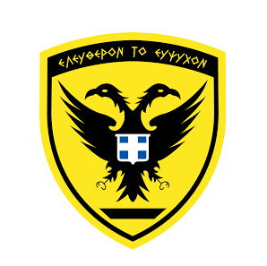
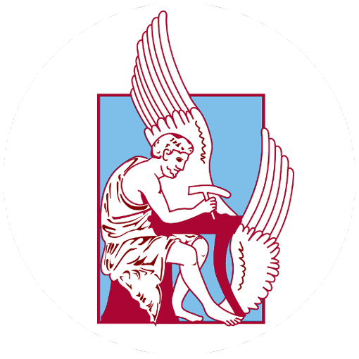
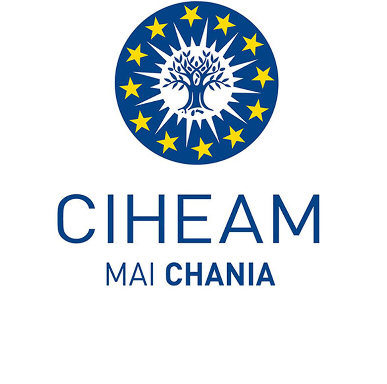
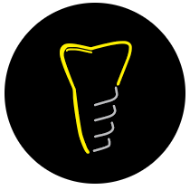
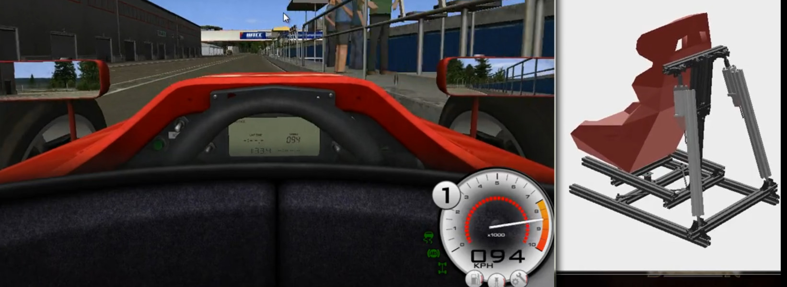
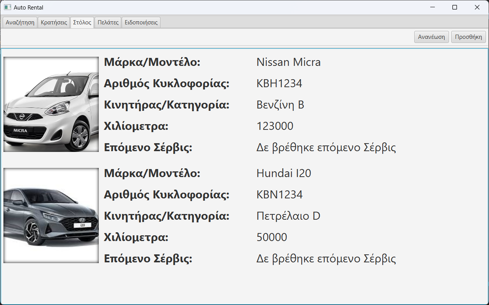
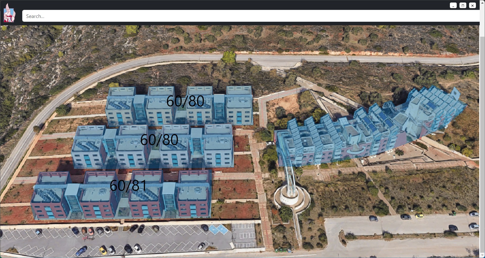
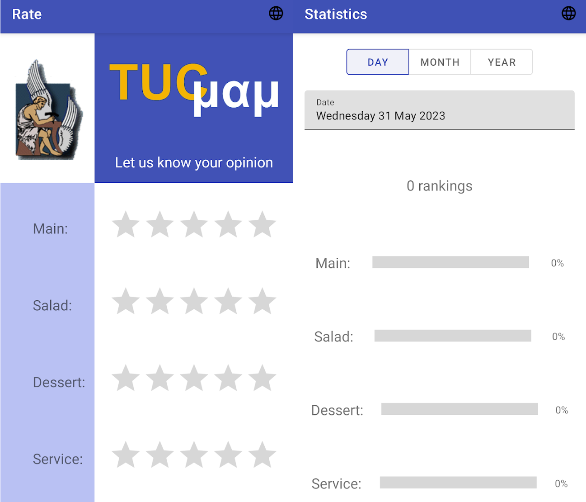

Nov 2023 - Jun 2024
(8 mos)

Military Service
Hellenic Army
Completed mandatory service of 8 mos.

My name is Aristarchos Tzatzos, I am from Kavala, Greece and I currently study Electrical and Computer Engineering at Technical University of Crete.
My passion is learning and working on projects involving electronics, programming, new technologies and science. I like working in groups and taking part in competitions, in order to evolve my teamworking and problem solving skills, and also to test my limits. In my free time I like to spend time with friends or learn something new.
The last 4 years I have been teaching programming and robotics to elementary school students through STEAM practices. I believe that the new generation is the key to improved technologies through the out of the box thinking, that their unbiased nature advantageously provides them.

Completed mandatory service of 8 mos.

Developed two applications for Technical University of Crete.
One collects and summarizes ratings for the restaurant of TUC.
(Google Play - Android only)
The other one aims to help with the management of "Hall of
Residencies" by visualizing the occupancy and breakdowns in a neat
GUI (Portable Windows App).

Creating and coordinating workshops involving Augmented Reality
(AR), Virtual Reality (VR), Teamwork and Problem Solving skills,
Electronics, Programming, Robotics and AI, following STEAM
practices.
The aim of the workshops is to communicate and teach methods of
introducing gamification in classrooms of primary and secondary
education.
MAKER SCHOOLS: Enhancing Student Creativity and STEM Engagement by
Integrating 3D Design and Programming into Secondary School
Learning Project Output
IO#2 - Extracurricular Training Program “Python for 3D printing
and creative explorations of 3D models”:
Performing STEAM activities for primary education students.
DISCOVER / Developing Innovative Science Outreach for Vocational
Education to Encourage STEM Carrers and Education under the
Erasmus+ programme.
Marked as Good Practice by Erasmus+
Project Output IO#4 - Programming:
Extracurricular training modules in Programming for secondary
vocational education.
Click here for the project site

Developed a website for the company Triandria Smiles from scratch
using only HTML and CSS (due to server limitations).
The website can be found
here
-
new version

Motion Simulator is an advanced project that brings an immersive and realistic experience to gaming by simulating motion.
Fridge Please is a project created in cooperation with Stylianos Zafeiris for the innovation competition PreECESCON 3, which was part of the ECESCON 10 conference.

Auto Rental is a JavaFX application with a PostgreSQL Database that manages car rentals. It provides an all-in-one solution, from the reservations and the customers' info to the cars' scheduled maintenance.

The TUChome App is a portable Windows application designed to assist with the management of the "Hall of Residencies" at the Technical University of Crete (TUC). The application provides a neat graphical user interface (GUI) to visualize occupancy, track breakdowns, and manage information about occupants and available rooms.

Through this application, you can evaluate the Restaurant of the Technical University of Crete in four sectors: main dish, salad, dessert, and service. You can use the application while you are on the premises of the Technical University of Crete and during the operating hours of the Restaurant.